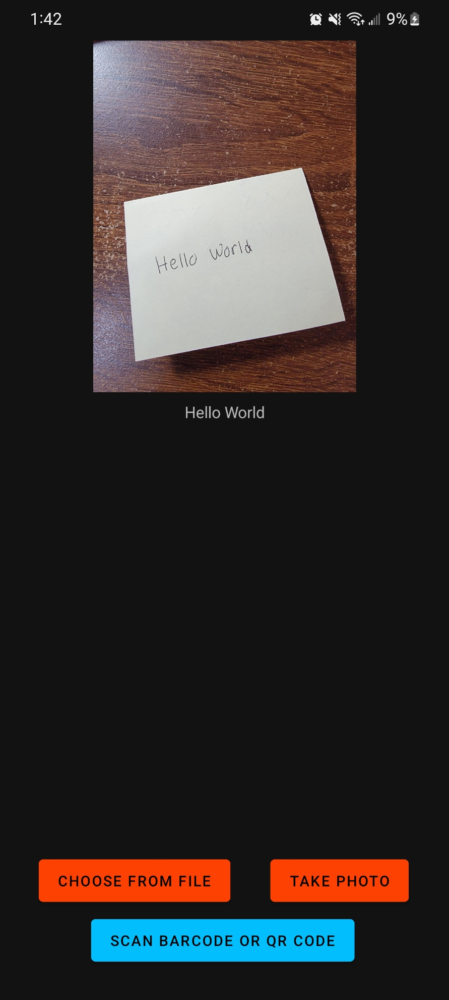
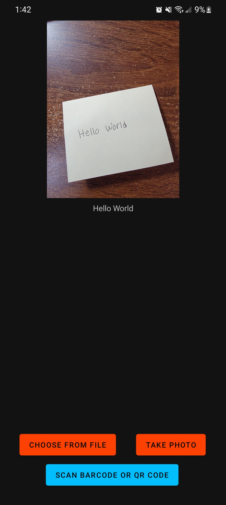
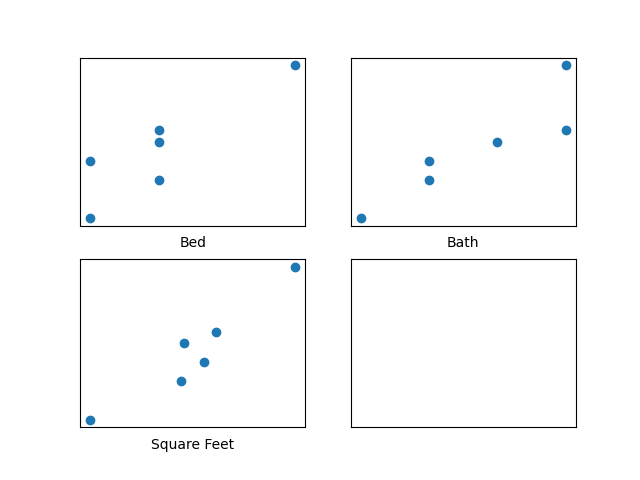
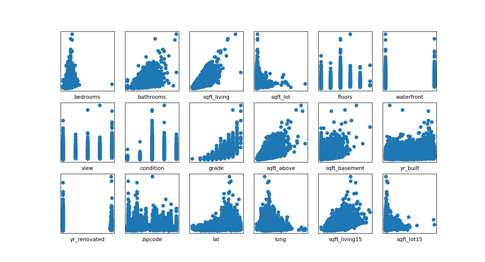
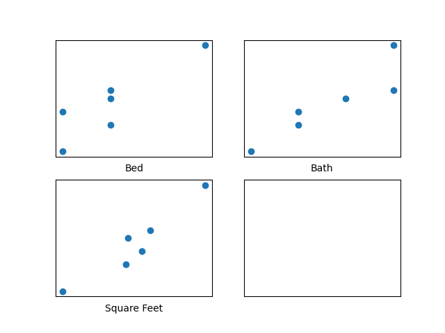
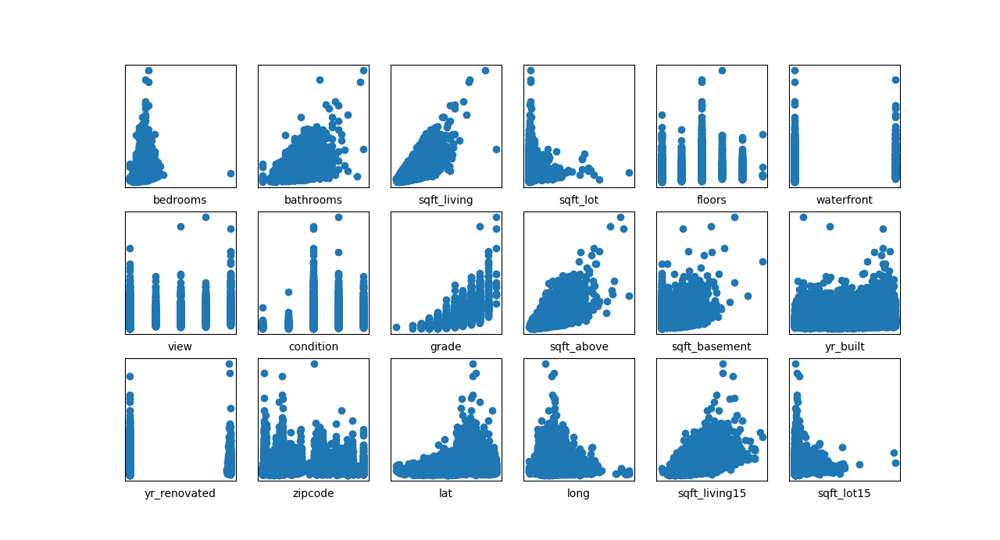
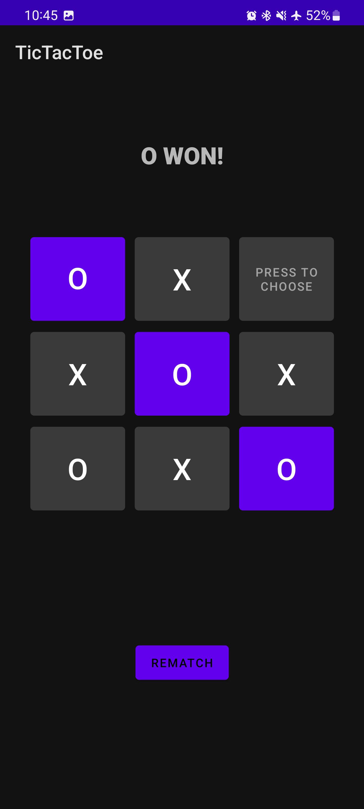
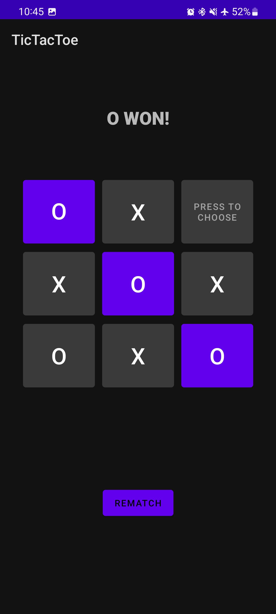

PantryPal
This project is a desktop app that can generate and store recipes for food. Recipes are generated by recording the user saying the type of meal they would like (Breakfast, Lunch, Dinner, etc.) and the ingredients they have available to use for the meal. The voice recordings are then transcribed using the Whisper API and then prompt ChatGPT's API for a suggested meal with instruction of how to make the meal. The DALL-E API is also called to generate a sample image of what the meal could look like. The generated recipe for the user is then stored on a database (on MongoDB) and can be viewed, editted, or deleted later on another device that the user logs into.

Above we can see the login screen for the app where the user can log in with their credentials or create a new account by giving a username and password. Then, once logged in, the user is shown the home screen (picture 3) where they can access previous saved recipes or add a new recipe. With the "remember me" feature in the log in screen, the user can bypass logging in in the future on the current device.

Here we can see the process for creating a new recipe. The user must first record the type of meal and the ingredients they want to use. Then, they are shown a confirmation page where they can manually or choose to have ChatGPT and DALL-E find a new recipe and picture with the same ingredients.
Above, we see how the user car can access previously saved recipes. A list of recipes are shown and can be sorted (by name or time of generation) and/or filtered (by meal type). By clicking on a recipe we can access a detailed page of the ingredients, instructions, and image.
The main code can be found at the below link:
Source Code
OCR
In this project, I created an android app that can recognize text in images from either existing images or from new images that can be taken from the camera directly from the app - this is a form of Optical Character Recognition (OCR). Further, it can also scan one or multiple barcode/QR codes from a single picture and display the raw data and format type - it supports 13 different barcode/QR code formats. It accomplishes these tasks by incorporating the Google ML Kit SDK.

 



Above, we can see the startup page of the app, as well as a demo in which the user takes a picture a sentence in the app and the sentence is then processed and shown below the image taken in the app in text form (image 3). It also shows a demo in which a single barcode/QR code is scanned and the respective value is then given to the user.
The main code and apk can be found at the below links:
MainActivity.java
MainActivity.xml
apk file
Custom ASIC + Encoder and Decoder
The goal of the project was to design a custom application-specific integrated circuit (ASIC) for a viterbi encoder and decoder on a 9-bit system. The instruction set architecture (ISA) was first designed with the a total of 8 instructions available taking up 3 bits and the other bits depended on the type of instruction. The ISA is summerized below.


Next, a custom assembler was created in pyton that translated any assembly code writen in the custom ISA to machine code that was loaded into the instruction ROM to be ran. The machine modules were coded in SystemVerilog and simulated in ModelSim and synthesized in Quartus. An overview of the machine and of one of the modules (the ALU) can be seen along with a brief section of the decoder written in the custom ISA


Face Recognition
TO BE ADDED
Email Spam Filter
This project makes use of Tensorflow to train a machine learning algorithm that can classify inputed emails based on if they are spam emails or not - it uses a neural network with two hidden layers to do so along with a bag-of-words vectorization. Two files are provided to train the model and to test the accuracy - TrainModel.py separates the full dataset such that roughly 80% is used for training and 20% for testing to be done in TestModel.py. In testing, it achieved an accuracy of over 96%.
Shown in the picture is an example loss vs epoch graph taken during training in the first image. In the second image, we can see the accuracy that was achieved with the dataset that the algorithm was not trained on. In the third image, we have an example screenshot showing the program training in progress.
The main code can be found at the below link:
Source Code
Gradient Descent Implementation for Regression
This is an implementation of a regression program - a form of supervised machine learning - that can handle datasets with multiple features. There are two main files within it: Custom_BGD_Regression and SKL_Regression. The custom implementation minimizes the squared-error cost function using batch gradient descent. It processes a .csv file to use as the training data and allows users to change the default values of the learning rate, maximum number of iterations of the gradient descent, and the epsilon value that is used to determine the convergence of the gradient descent. Once trained, the developed model can be used to predict values for other examples. Using matplotlib, plots of the learning curve and individual features can be shown. The second file, SKL_Regression, is a roughly functionally equivalent program using stochastic gradient descent which was developed using scikit_learn specifically, the SGDRegressor. Further specifications on program methods and .csv formatting are commented in the program files. There is an included tester file which is used to test various methods of both programs.
 




The screenshots show an example of a learning curve that was given using the BGD program in the first screenshot as well as plots of different datasets' features vs. the true output as given in the training data - one set has 3 features and the other has 18 - to be used to visualize trends. An example of how to interact with the program through the command line in shown in the fourth screenshot. In all of these scenarios, housing data was used to predict prices.
The main code can be found at the below link:
Source Code
Score Calculator
This project draws on the Java swing toolkit to create a Java program and GUI that interacts with the user to get bowling score frame by frame for a standard game with 10 frames. It can then calculate the game score based on the rules of bowling in which spares double the next score and a strike doubles the next two.


In the above screenshots we can see the state of the program when it first launched as well two example scores with the correct final scores shown based on the inputs, respectively. In the last image, we see the result of an incorrect/impossible score being inputted and the error message that is shown as a result - this is because of the score of 11 being inputted in the last frame which is not possible in a standard game of bowling.
The main code can be found at the below link:
Source Code
TicTacToe Android App
This folder contains all of the files used to create an Android app of the classic TicTacToe game; the app shows which player's turn it is and can also determine once a winner/tie has been achieved.


 


The images above show a demonstration of the game when it is first started as well as different scenarios in which either player X or player O win the game or if the game ends in a tie.
The main code and apk can be found at the below links:
MainActivity.java
MainActivity.xml
apk file